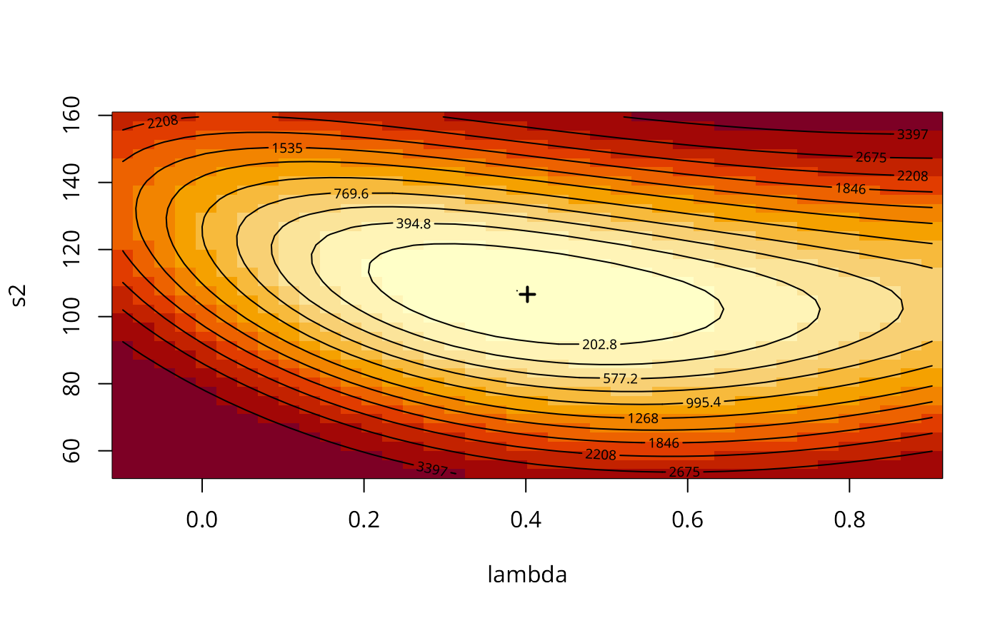

Spatial simultaneous autoregressive error model estimation by GMM
GMerrorsar.RdAn implementation of Kelejian and Prucha's generalised moments estimator for the autoregressive parameter in a spatial model.
Usage
GMerrorsar(formula, data = list(), listw, na.action = na.fail,
zero.policy = attr(listw, "zero.policy"), method="nlminb", arnoldWied=FALSE,
control = list(), pars, scaleU=FALSE, verbose=NULL, legacy=FALSE,
se.lambda=TRUE, returnHcov=FALSE, pWOrder=250, tol.Hcov=1.0e-10)
# S3 method for class 'Gmsar'
summary(object, correlation = FALSE, Hausman=FALSE, ...)
GMargminImage(obj, lambdaseq, s2seq)Arguments
- formula
a symbolic description of the model to be fit. The details of model specification are given for
lm()- data
an optional data frame containing the variables in the model. By default the variables are taken from the environment which the function is called.
- listw
a
listwobject created for example bynb2listw- na.action
a function (default
na.fail), can also bena.omitorna.excludewith consequences for residuals and fitted values - in these cases the weights list will be subsetted to remove NAs in the data. It may be necessary to set zero.policy to TRUE because this subsetting may create no-neighbour observations. Note that only weights lists created without using the glist argument tonb2listwmay be subsetted.- zero.policy
default NULL, use global option value; if TRUE assign zero to the lagged value of zones without neighbours, if FALSE (default) assign NA - causing
GMerrorsar()to terminate with an error- method
default
"nlminb", or optionally a method passed tooptimto use an alternative optimizer- arnoldWied
default FALSE
- control
A list of control parameters. See details in
optimornlminb.- pars
starting values for \(\lambda\) and \(\sigma^2\) for GMM optimisation, if missing (default), approximated from initial OLS model as the autocorrelation coefficient corrected for weights style and model sigma squared
- scaleU
Default FALSE: scale the OLS residuals before computing the moment matrices; only used if the
parsargument is missing- verbose
default NULL, use global option value; if TRUE, reports function values during optimization.
- legacy
default FALSE - compute using the unfiltered values of the response and right hand side variables; if TRUE - compute the fitted value and residuals from the spatially filtered model using the spatial error parameter
- se.lambda
default TRUE, use the analytical method described in http://econweb.umd.edu/~prucha/STATPROG/OLS/desols.pdf
- returnHcov
default FALSE, return the Vo matrix for a spatial Hausman test
- tol.Hcov
the tolerance for computing the Vo matrix (default=1.0e-10)
- pWOrder
default 250, if returnHcov=TRUE, pass this order to
powerWeightsas the power series maximum limit- object, obj
Gmsarobject fromGMerrorsar- correlation
logical; (default=FALSE), TRUE not available
- Hausman
if TRUE, the results of the Hausman test for error models are reported
- ...
summaryarguments passed through- lambdaseq
if given, an increasing sequence of lambda values for gridding
- s2seq
if given, an increasing sequence of sigma squared values for gridding
Details
When the control list is set with care, the function will converge to values close to the ML estimator without requiring computation of the Jacobian, the most resource-intensive part of ML estimation.
Note that the fitted() function for the output object assumes that the response variable may be reconstructed as the sum of the trend, the signal, and the noise (residuals). Since the values of the response variable are known, their spatial lags are used to calculate signal components (Cressie 1993, p. 564). This differs from other software, including GeoDa, which does not use knowledge of the response variable in making predictions for the fitting data.
The GMargminImage may be used to visualize the shape of the surface of the argmin function used to find lambda.
Value
A list object of class Gmsar
- type
"ERROR"
- lambda
simultaneous autoregressive error coefficient
- coefficients
GMM coefficient estimates
- rest.se
GMM coefficient standard errors
- s2
GMM residual variance
- SSE
sum of squared GMM errors
- parameters
number of parameters estimated
- lm.model
the
lmobject returned when estimating for \(\lambda=0\)- call
the call used to create this object
- residuals
GMM residuals
- lm.target
the
lmobject returned for the GMM fit- fitted.values
Difference between residuals and response variable
- formula
model formula
- aliased
if not NULL, details of aliased variables
- zero.policy
zero.policy for this model
- vv
list of internal bigG and litg components for testing optimisation surface
- optres
object returned by optimizer
- pars
start parameter values for optimisation
- Hcov
Spatial DGP covariance matrix for Hausman test if available
- legacy
input choice of unfiltered or filtered values
- lambda.se
value computed if input argument TRUE
- arnoldWied
were Arnold-Wied moments used
- GMs2
GM argmin sigma squared
- scaleU
input choice of scaled OLS residuals
- vcov
variance-covariance matrix of regression coefficients
- na.action
(possibly) named vector of excluded or omitted observations if non-default na.action argument used
References
Kelejian, H. H., and Prucha, I. R., 1999. A Generalized Moments Estimator for the Autoregressive Parameter in a Spatial Model. International Economic Review, 40, pp. 509–533; Cressie, N. A. C. 1993 Statistics for spatial data, Wiley, New York.
Roger Bivand, Gianfranco Piras (2015). Comparing Implementations of Estimation Methods for Spatial Econometrics. Journal of Statistical Software, 63(18), 1-36. doi:10.18637/jss.v063.i18 .
Examples
#require("spdep", quietly=TRUE)
data(oldcol, package="spdep")
COL.errW.eig <- errorsarlm(CRIME ~ INC + HOVAL, data=COL.OLD,
spdep::nb2listw(COL.nb, style="W"), method="eigen")
(x <- summary(COL.errW.eig, Hausman=TRUE))
#>
#> Call:
#> errorsarlm(formula = CRIME ~ INC + HOVAL, data = COL.OLD, listw = spdep::nb2listw(COL.nb,
#> style = "W"), method = "eigen")
#>
#> Residuals:
#> Min 1Q Median 3Q Max
#> -34.81174 -6.44031 -0.72142 7.61476 23.33626
#>
#> Type: error
#> Coefficients: (asymptotic standard errors)
#> Estimate Std. Error z value Pr(>|z|)
#> (Intercept) 59.893219 5.366163 11.1613 < 2.2e-16
#> INC -0.941312 0.330569 -2.8476 0.0044057
#> HOVAL -0.302250 0.090476 -3.3407 0.0008358
#>
#> Lambda: 0.56179, LR test value: 7.9935, p-value: 0.0046945
#> Asymptotic standard error: 0.13387
#> z-value: 4.1966, p-value: 2.7098e-05
#> Wald statistic: 17.611, p-value: 2.7098e-05
#>
#> Log likelihood: -183.3805 for error model
#> ML residual variance (sigma squared): 95.575, (sigma: 9.7762)
#> Number of observations: 49
#> Number of parameters estimated: 5
#> AIC: 376.76, (AIC for lm: 382.75)
#> Hausman test: 4.902, df: 3, p-value: 0.17911
#>
coef(x)
#> Estimate Std. Error z value Pr(>|z|)
#> (Intercept) 59.8932192 5.36616252 11.161276 0.0000000000
#> INC -0.9413120 0.33056857 -2.847554 0.0044056569
#> HOVAL -0.3022502 0.09047605 -3.340665 0.0008357788
COL.errW.GM <- GMerrorsar(CRIME ~ INC + HOVAL, data=COL.OLD,
spdep::nb2listw(COL.nb, style="W"), returnHcov=TRUE)
(x <- summary(COL.errW.GM, Hausman=TRUE))
#>
#> Call:
#> GMerrorsar(formula = CRIME ~ INC + HOVAL, data = COL.OLD, listw = spdep::nb2listw(COL.nb,
#> style = "W"), returnHcov = TRUE)
#>
#> Residuals:
#> Min 1Q Median 3Q Max
#> -30.5432 -6.5553 -2.1921 10.0553 28.7497
#>
#> Type: GM SAR estimator
#> Coefficients: (GM standard errors)
#> Estimate Std. Error z value Pr(>|z|)
#> (Intercept) 62.513752 5.121339 12.207 < 2.2e-16
#> INC -1.128283 0.339745 -3.321 0.000897
#> HOVAL -0.296957 0.095699 -3.103 0.001915
#>
#> Lambda: 0.40196 (standard error): 0.42334 (z-value): 0.94948
#> Residual variance (sigma squared): 106.64, (sigma: 10.327)
#> GM argmin sigma squared: 106.36
#> Number of observations: 49
#> Number of parameters estimated: 5
#> Hausman test: 6.6406, df: 3, p-value: 0.08428
#>
coef(x)
#> Estimate Std. Error z value Pr(>|z|)
#> (Intercept) 62.5137525 5.12133863 12.206526 0.0000000000
#> INC -1.1282834 0.33974492 -3.320972 0.0008970455
#> HOVAL -0.2969573 0.09569889 -3.103038 0.0019154486
aa <- GMargminImage(COL.errW.GM)
levs <- quantile(aa$z, seq(0, 1, 1/12))
image(aa, breaks=levs, xlab="lambda", ylab="s2")
points(COL.errW.GM$lambda, COL.errW.GM$s2, pch=3, lwd=2)
contour(aa, levels=signif(levs, 4), add=TRUE)

COL.errW.GM1 <- GMerrorsar(CRIME ~ INC + HOVAL, data=COL.OLD,
spdep::nb2listw(COL.nb, style="W"))
summary(COL.errW.GM1)
#>
#> Call:
#> GMerrorsar(formula = CRIME ~ INC + HOVAL, data = COL.OLD, listw = spdep::nb2listw(COL.nb,
#> style = "W"))
#>
#> Residuals:
#> Min 1Q Median 3Q Max
#> -30.5432 -6.5553 -2.1921 10.0553 28.7497
#>
#> Type: GM SAR estimator
#> Coefficients: (GM standard errors)
#> Estimate Std. Error z value Pr(>|z|)
#> (Intercept) 62.513752 5.121339 12.207 < 2.2e-16
#> INC -1.128283 0.339745 -3.321 0.000897
#> HOVAL -0.296957 0.095699 -3.103 0.001915
#>
#> Lambda: 0.40196 (standard error): 0.42334 (z-value): 0.94948
#> Residual variance (sigma squared): 106.64, (sigma: 10.327)
#> GM argmin sigma squared: 106.36
#> Number of observations: 49
#> Number of parameters estimated: 5
#>
require("sf", quietly=TRUE)
nydata <- st_read(system.file("shapes/NY8_bna_utm18.gpkg", package="spData")[1], quiet=TRUE)
suppressMessages(nyadjmat <- as.matrix(foreign::read.dbf(system.file(
"misc/nyadjwts.dbf", package="spData")[1])[-1]))
suppressMessages(ID <- as.character(names(foreign::read.dbf(system.file(
"misc/nyadjwts.dbf", package="spData")[1]))[-1]))
identical(substring(ID, 2, 10), substring(as.character(nydata$AREAKEY), 2, 10))
#> [1] TRUE
listw_NY <- spdep::mat2listw(nyadjmat, as.character(nydata$AREAKEY), style="B")
esar1f <- spautolm(Z ~ PEXPOSURE + PCTAGE65P + PCTOWNHOME, data=nydata,
listw=listw_NY, family="SAR", method="eigen")
summary(esar1f)
#>
#> Call:
#> spautolm(formula = Z ~ PEXPOSURE + PCTAGE65P + PCTOWNHOME, data = nydata,
#> listw = listw_NY, family = "SAR", method = "eigen")
#>
#> Residuals:
#> Min 1Q Median 3Q Max
#> -1.56754 -0.38239 -0.02643 0.33109 4.01219
#>
#> Coefficients:
#> Estimate Std. Error z value Pr(>|z|)
#> (Intercept) -0.618193 0.176784 -3.4969 0.0004707
#> PEXPOSURE 0.071014 0.042051 1.6888 0.0912635
#> PCTAGE65P 3.754200 0.624722 6.0094 1.862e-09
#> PCTOWNHOME -0.419890 0.191329 -2.1946 0.0281930
#>
#> Lambda: 0.040487 LR test value: 5.2438 p-value: 0.022026
#> Numerical Hessian standard error of lambda: 0.017197
#>
#> Log likelihood: -276.1069
#> ML residual variance (sigma squared): 0.41388, (sigma: 0.64333)
#> Number of observations: 281
#> Number of parameters estimated: 6
#> AIC: 564.21
#>
esar1gm <- GMerrorsar(Z ~ PEXPOSURE + PCTAGE65P + PCTOWNHOME,
data=nydata, listw=listw_NY)
summary(esar1gm)
#>
#> Call:GMerrorsar(formula = Z ~ PEXPOSURE + PCTAGE65P + PCTOWNHOME,
#> data = nydata, listw = listw_NY)
#>
#> Residuals:
#> Min 1Q Median 3Q Max
#> -1.641411 -0.396370 -0.026618 0.341740 4.204264
#>
#> Type: GM SAR estimator
#> Coefficients: (GM standard errors)
#> Estimate Std. Error z value Pr(>|z|)
#> (Intercept) -0.604364 0.174576 -3.4619 0.0005364
#> PEXPOSURE 0.067902 0.041164 1.6496 0.0990337
#> PCTAGE65P 3.775308 0.622965 6.0602 1.359e-09
#> PCTOWNHOME -0.437545 0.188906 -2.3162 0.0205468
#>
#> Lambda: 0.03605 (standard error): 0.2022 (z-value): 0.17829
#> Residual variance (sigma squared): 0.41585, (sigma: 0.64487)
#> GM argmin sigma squared: 0.45141
#> Number of observations: 281
#> Number of parameters estimated: 6
#>
esar1gm1 <- GMerrorsar(Z ~ PEXPOSURE + PCTAGE65P + PCTOWNHOME,
data=nydata, listw=listw_NY, method="Nelder-Mead")
summary(esar1gm1)
#>
#> Call:GMerrorsar(formula = Z ~ PEXPOSURE + PCTAGE65P + PCTOWNHOME,
#> data = nydata, listw = listw_NY, method = "Nelder-Mead")
#>
#> Residuals:
#> Min 1Q Median 3Q Max
#> -1.641390 -0.396374 -0.026616 0.341745 4.204277
#>
#> Type: GM SAR estimator
#> Coefficients: (GM standard errors)
#> Estimate Std. Error z value Pr(>|z|)
#> (Intercept) -0.604384 0.174580 -3.4619 0.0005363
#> PEXPOSURE 0.067907 0.041165 1.6496 0.0990225
#> PCTAGE65P 3.775275 0.622969 6.0601 1.36e-09
#> PCTOWNHOME -0.437518 0.188910 -2.3160 0.0205572
#>
#> Lambda: 0.036057 (standard error): 0.20221 (z-value): 0.17832
#> Residual variance (sigma squared): 0.41585, (sigma: 0.64487)
#> GM argmin sigma squared: 0.45139
#> Number of observations: 281
#> Number of parameters estimated: 6
#>